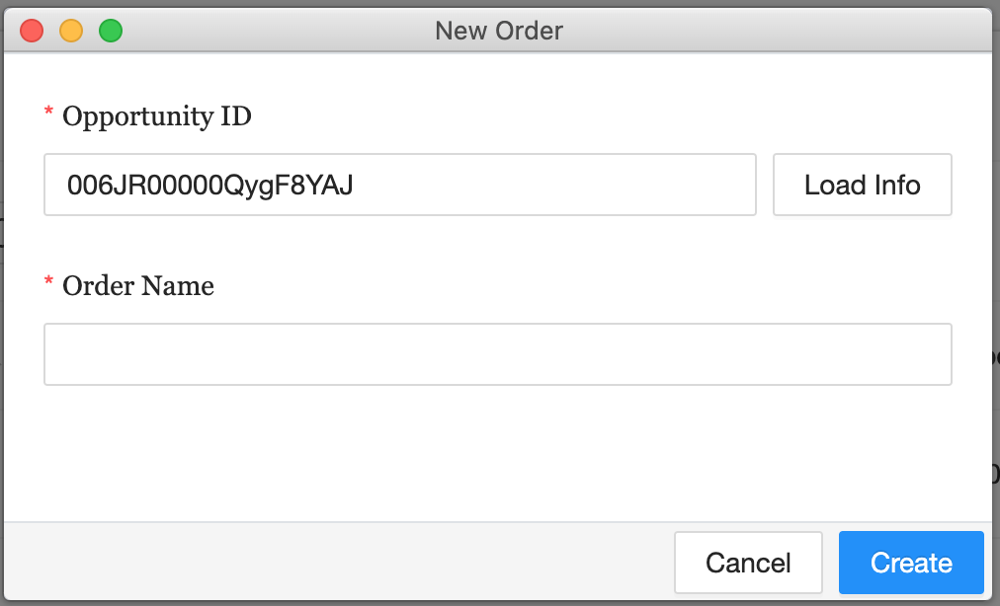

Through partner order, users can create and place mapping project orders based on their own requirements. Different features can be extracted from the provided imagery. In addition, users can determine if the order processing is fully automated or requires human annotation at certain stages.
Users can start a new order by clicking on the  button located on the top-right of the interface.
Click on “Submit” after setting the order name, the order list page will jump to basic settings page for users to provide more detailed information. The settings page can also be opened by clicking in the action column of each order.
By clicking on the space on the top right corner, users can upload the AOI file from local machine. Once uploaded, the AOI will be listed under Order’s AOI Data section of the page.
Note
The AOI file needs to be in zipped shapefile format and smaller than 4 MB.
In order to have the system generate the most accurate estimate delivery time, users are required to provide Expect Image Arrivel time and confirm when the imagery actually arrives.
Imagery datasets that will be used for this order will be listed in this section. By clicking on the “Add Imagery” button in the Order’s Imagery Data section, users can add imagery data to the order by providing the following information:
Name: name of the imagery data
Category: 2D or 3D imagery data
Imagery Type: Satellite or Aerial
Image Path: Ecopia provides different types of data transfer protocol. Users can select the one that best filt their needs from the protocol dropdown list.
After the information is provided, click on “Submit”. In the following window, bind the imagery data with AOI that will be used for feature extraction and click on “Confirm” to complete the imagery adding process.
This space allows users to select desired features (Catetitle) to be extracted from the provided imagery.
A list of standard product packages are listed on top of the catetitles. Users can select one or multiple and corresponding catetiles will be automatically selected in the catetitle list below.
Select Catetitle: by clicking on the checkbox next to each Catetitle
Catetitles are categorized into 3 different Categories:
Raster: include DSM and orthomosaic data generated through production pipeline
2D Landcover: includes building, road, manmade and natural landcover features; height attribute can be selected to construct 3D landcover data
Advanced Transportation: includes different types of transportation related centerlines, road marking, signs and other transportation features that can be used for guiding and navigation
For definition of each Catetitle, please refer to Glossary for more details.
Users can select the category in general or select second-tier categories to further differentiate the features
Selected Catetitles will be reflected in the Advanced settings for selected products section in the settings
In the Advanced settings for selected products section, users can modify the catetitle name in the delivery shapefile.
Catetitle name in the delivery shapefile can be modified by clicking on the edit button;
Special capturing rules can be added to advance settings to provide production team with clear instructions.
Catetitle Advanced Settings
To help Ecopia team better understand the extraction requirements, users can attach supporting document in the Attached Document for Extraction Request section.
Click on “Save & Continue” to apply the changes and continue to Area of Interest.
Once the AOI information and extraction settings are provided through previous pages, users can obtain quote information and place order to put the order into production.
User can obtain quote information by clicking on the Quote button. At this stage, the system is calculating the quote for the order based on the extraction settings and size of the AOI. The process will normally take a few minutes to complete.
Email notification will be sent to order owner once the vector result is delivered. By clicking on the button, users can view the deliveries and their path on the platform. To download the vector results

 : Ignore missing area and proceed with current coverage
: Ignore missing area and proceed with current coverage